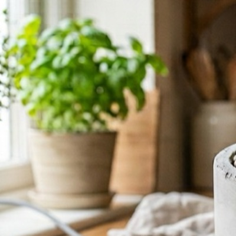
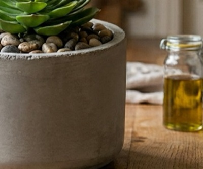
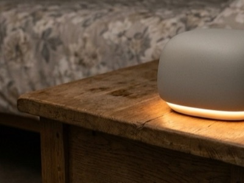
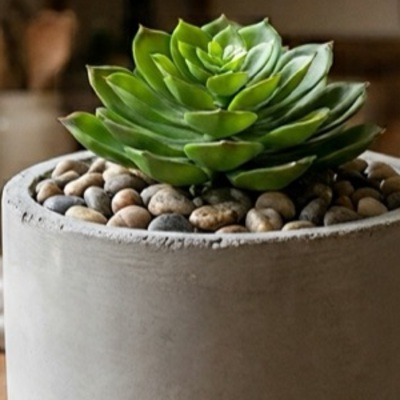

WavePresence
No cameras, no micsWatching the room, never the person.
Sensors that live among the things you already keep. They know a room is in use, when it went quiet, and when someone needs you.
Kitchenin use now
Bedroomquiet 3h



68%
of usual
of usual

PLANT SENSOR · KITCHEN
We don't watch people. We watch their surroundings.
- No video or audio, ever. Nothing to record, nothing to leak.
- Nothing to wear. No wristband, no tag, no phone in a pocket.
- You see "the bedroom was quiet", never what anyone is doing.
Made to blend in.
All of our sensors hide their technology in style. A plant for the kitchen counter, a stone for the nightstand, a stalk or a disc where you want it out of the way.